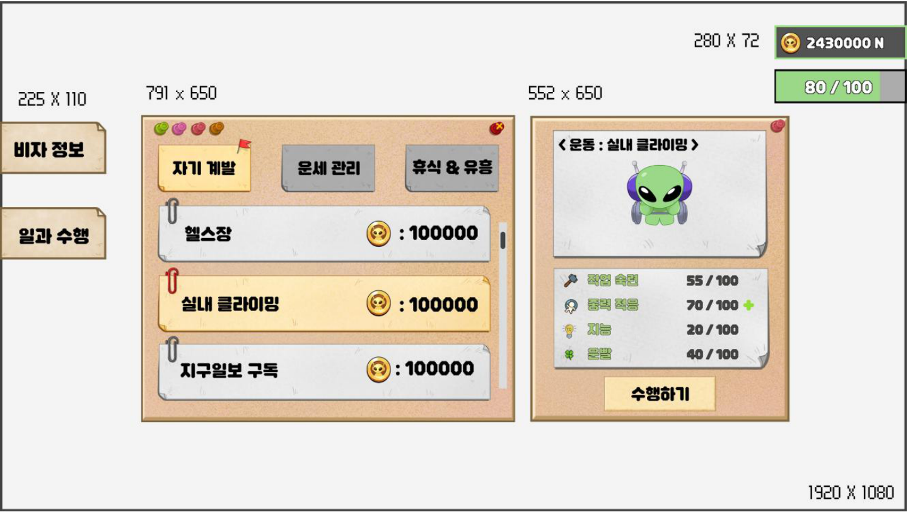

성장 시스템_일과 시스템
일과는 미니게임으로 번 골드를 쓰는 곳이자, 다음 미니게임에 영향을 주는 스탯을 키우는 성장 콘텐츠입니다. 플레이어가 하루 일과를 골라 골드를 쓰면 스탯이 오르거나 피로도가 회복됩니다. 골드의 소모처를 만들면서, 그 결과가 다시 미니게임 플레이로 이어지도록 설계했습니다.
진입과 화면 흐름
| 단계 |
화면 |
동작 |
| 1 |
메인 화면 |
왼쪽 메뉴의 비자 정보 버튼은 캐릭터 스테이터스 창을, 일과 수행 버튼은 일과 선택창을 연다. 두 버튼은 같은 형태에 글자만 다르다. |
| 2 |
일과 선택창 |
탭과 일과 목록에서 일과를 고르고, 오른쪽 정보 패널에서 현재 스탯을 확인한 뒤 수행하기를 누른다. |
| 3 |
일과 진행창 |
일과별 진행 문구와 애니메이션을 보여 주고, 남은 재생 시간을 게이지로 표시한다. |
| 4 |
일과 결과창 |
완료 문구와 함께 스탯 변화를 보여 준다. |
골드와 피로도 표시는 화면 오른쪽 위에 항상 떠 있으며, 일과를 진행하는 동안에도 사라지지 않습니다.
일과 선택창 구성

| 요소 |
규칙 |
| 카테고리 탭 |
자기 계발, 운세 관리, 휴식 & 유흥 3개. 선택한 탭은 밝은 색과 깃발로, 나머지는 회색으로 표시한다. |
| 일과 목록 |
탭에 속한 일과를 정렬 순서대로 나열한다. 한 줄에 일과 이름과 소모 골드를 표시하고, 선택한 줄은 노란색과 빨간 클립으로 구분한다. |
| 스크롤바 |
목록이 창보다 길면 오른쪽 스크롤바로 내린다. 트랙과 막대는 따로 만든다. |
| 썸네일 영역 |
선택한 일과의 썸네일 문구(예: <운동 : 실내 클라이밍>)와 애니메이션 썸네일을 표시한다. |
| 스탯 요약 |
작업 숙련, 중력 적응, 지능, 운빨의 현재 값을 현재 / 100으로 표시한다. 이 일과로 바뀌는 스탯 옆에는 +, -로 증감 방향만 표시한다. |
| 수행하기 버튼 |
누르면 일과 진행창으로 넘어간다. 소지금이 부족하면 비활성화되고 글자가 소지금 부족으로 바뀐다. |
| 골드, 피로도 |
오른쪽 위에 항상 표시한다. |
성장 시스템_일과 데이터와 피로도 회복
일과 목록
같은 탭 안에서는 정렬 순서대로 나열합니다. 효과 열은 실제 변화량이고, 선택창 표시 열은 수행 전에 보여 주는 증감 방향입니다.
| 카테고리 |
일과 |
정렬 |
소모 골드 |
효과 |
선택창 표시 |
| 자기 계발 |
헬스 |
1 |
100000 |
중력 적응 +1 |
중력 적응 + |
| 자기 계발 |
실내 클라이밍 |
2 |
200000 |
중력 적응 +2 |
중력 적응 ++ |
| 자기 계발 |
지구 일보 구독 |
3 |
50000 |
지능 +2 |
지능 + |
| 자기 계발 |
지구사 연구 |
4 |
100000 |
지능 +3 |
지능 ++ |
| 운세 관리 |
기도 |
1 |
0 |
운빨 -10 ~ +10 중 하나, 모두 같은 확률 |
운빨 ?? |
| 운세 관리 |
쓰레기 줍기 |
2 |
0 |
운빨 0 ~ +5 중 하나, 모두 같은 확률 |
운빨 + |
| 휴식 & 유흥 |
가만히 있기 |
1 |
0 |
지능 -2, 피로도 1 회복 |
지능 - |
| 휴식 & 유흥 |
노래방 |
2 |
150000 |
효과 없음 |
없음 |
| 휴식 & 유흥 |
헌팅포차 |
3 |
300000 |
효과 없음 |
없음 |
| 휴식 & 유흥 |
병원 입원 |
4 |
500000 |
피로도 1 회복 |
없음 |
일과별 문구
| 일과 |
썸네일 |
진행 중 |
완료 후 |
| 헬스 |
<운동: 헬스> |
근성장중... |
근육이 조금 붙은 거 같다 |
| 실내 클라이밍 |
<운동: 실내 클라이밍> |
팔다리가 짧아서 슬프다... |
지구 중력에 조금은 익숙해진 것 같다 |
| 지구 일보 구독 |
<공부: 지구 일보 구독> |
역시 신문은 만화가 제일 재밌다... |
시사 상식이 늘은 것 같다. |
| 지구사 연구 |
<공부: 지구사 연구> |
어디까지 했더라... |
조금은 똑똑해진 거 같다. |
| 기도 |
<운세관리: 기도> |
네이오스 신에게 열심히 비는 중... |
네이오스 신이 기도를 들어 주었습니다. |
| 쓰레기 줍기 |
<운세관리: 쓰레기 줍기> |
나는야 건실한 청년... |
선행은 행운을 가져다줍니다. |
| 가만히 있기 |
<휴식: 가만히 있기> |
멍청해지는 것 같다... |
내일은 뭐라도 하자.. |
| 노래방 |
<유흥: 노래방> |
비내리는 호남선~ 남행 열차에 |
노래 실력이 늘은 것 같은데.? |
| 헌팅포차 |
<유흥: 헌팅포차> |
오늘은 성공...? |
역시나 오늘도 실패했다. |
| 병원 입원 |
<휴식: 입원> |
... |
항상 건강이 최우선입니다. |
피로도 회복
피로도는 미니게임을 하기 위한 비용입니다. 최대 3개까지 보유하고 미니게임을 1회 하면 1개 줄며, 0이면 미니게임 진행 버튼이 비활성화됩니다. 일과로는 아래 두 가지 방법으로 회복합니다.
| 일과 |
규칙 |
| 가만히 있기 |
수행하면 피로도 1개를 회복한다. 인게임 시간 30분마다 한 번 수행할 수 있다. 처음 수행하기 전에는 타이머가 00:00이고, 수행한 뒤부터 타이머가 줄어든다. 타이머가 0초가 될 때까지 수행하기 버튼은 비활성화된다. |
| 병원 입원 |
골드를 써서 피로도 1개를 회복한다. 횟수 제한은 없다. |